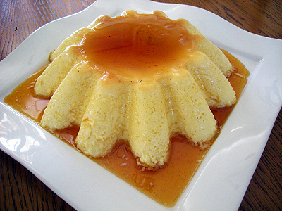
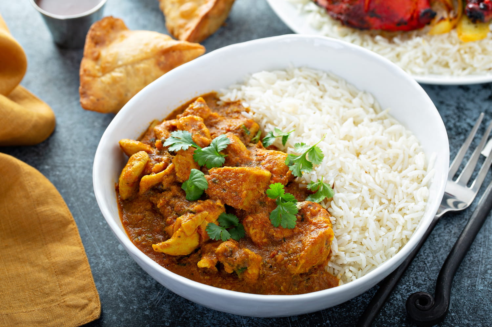
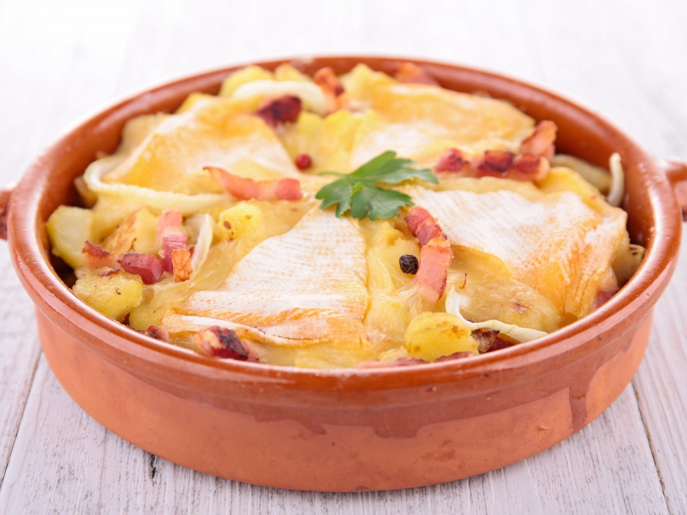

Voici une liste des différentes recettes :
- Le tiramisu
Présentation du tiramisu

Le tiramisu est une patisserie et un dessert tradionnel de la cuisine italienne.
Pour la recette :Tiramisu
- Le flan
Présentation du flan
Le flan est une préparation culinaire cuite, de forme ronde comme son nom l'indique,
de texture solide, tremblante, lisse et tendre, ayant pour base des d'œufs battus dans du lait ou de la crème de lait.Pour la recette :Flan
- La lasagne
Présentation de la lasagne

Elles sont originaires du centre-sud italien, même si la version la plus connue est celle
accompagnée d'une sauce bolognaise.Pour la recette :Lasagne
- Le curry de poulet
Présentation du curry de poulet
Un curry est un plat ayant son origine dans la gastronomie du sous-continent indien.
Il se caractérise par une combinaison complexe d’épices et d’herbes comprenant en général des piments frais ou séchés.Pour la recette :Curry
- La tartiflette
Présentation de la tartiflette
La tartiflette est une recette de cuisine, à base de gratin de pommes de terre, oignons, lardons,
le tout gratiné au reblochon.Pour la recette :Tartiflette